农耕与牧场
星露农耕：17 种四季作物、星级品质、玻璃温室、肥料与洒水器；星露牧场：动物好感、饲料与 3D 加工机
农耕中心 /farm
/farm（别名 /种田、/农场、/农耕）有三个分页：农耕图鉴、四季种子店、肥料与洒水器。
种法和原版一样：锄地、对着耕地右键播种、成熟后右键收割。区别是收获的作物会带星级品质，可以 /sell 出货，也能当工坊和宴席的食材。

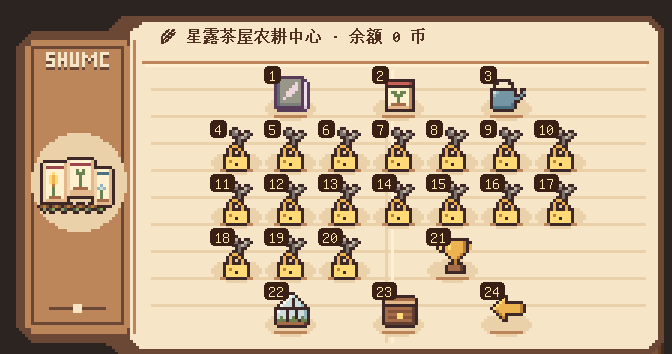
星级品质
| 品质 | 出货倍率 |
|---|---|
| ★ 普通 | ×1.0 |
| ★★ 银星 | ×1.25 |
| ★★★ 金星 | ×1.55 |
| 👑 珍品（4 星） | ×2.0（出率很低，满配也只有几个百分点） |
想冲高星：金星品质肥 + 农艺师专精 + 玻璃温室 + 铱金洒水器可以叠加；四季线天赋「听雨」「节气农法」也加品质。偶尔会触发「黄金大丰收」多掉一份；农艺师天赋「巨型作物」能种出出货 ×3 的巨型特色作物。
17 种作物
四季通用（原版作物）
小麦、胡萝卜、马铃薯、甜菜根、地狱疣在任何季节都能种，收获成熟的原版作物就会点亮图鉴。基础出货价 3–4 币 / 个。
12 种四季特色作物
种子在四季种子店买。当季可以露天种；不是当季的要种在玻璃温室里。多茬作物收割后会留苗再长。
| 作物 | 季节 | 种子价 | 出货单价（★ ~ 👑） | 类型 |
|---|---|---|---|---|
| 樱桃草莓 | 🌸 春 | 22 币 | 10 ~ 20 币 | 多茬 |
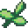 宇治抹茶嫩芽 | 🌸 春 | 26 币 | 14 ~ 28 币 | 多茬 |
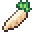 奶油防风草 | 🌸 春 | 14 币 | 12 ~ 24 币 | 单茬 |
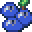 星露蓝莓 | ☀ 夏 | 22 币 | 8 ~ 16 币 | 多茬 |
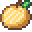 阳光蜜瓜 | ☀ 夏 | 26 币 | 22 ~ 44 币 | 单茬 |
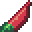 炽焰朝天椒 | ☀ 夏 | 22 币 | 11 ~ 22 币 | 多茬 |
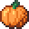 板栗金南瓜 | 🍁 秋 | 28 币 | 24 ~ 48 币 | 单茬 |
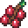 红宝石蔓越莓 | 🍁 秋 | 22 币 | 8 ~ 16 币 | 多茬 |
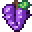 紫晶蜜葡萄 | 🍁 秋 | 26 币 | 13 ~ 26 币 | 多茬 |
| 冰晶冬莓 | ❄ 冬 | 24 币 | 12 ~ 24 币 | 多茬 |
| 天山雪莲 | ❄ 冬 | 34 币 | 30 ~ 60 币 | 单茬 |
| 黑金冬松露 | ❄ 冬 | 40 币 | 35 ~ 70 币 | 单茬 |
出货单价按插件代码的星级倍率（×1.0 ~ ×2.0）计算，未含专精、季节、热卖等加成；游戏内菜单上「珍品 ×3.2」的写法是旧说明，实际出货以代码为准。
采摘作物时还会随机掉落当季香料（樱花瓣 / 薄荷叶 / 桂花蜜 / 雪肉桂），是工坊隐藏秘方的材料。


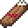
图鉴里程碑
每种作物收获一次就点亮。
| 点亮 | 奖励 |
|---|---|
| 4 种 | 200 币 + 速长肥 ×6 |
| 8 种 | 450 币 + 铜洒水器 + 品质肥 ×6 |
| 12 种 | 900 币 + 银洒水器 + 金苹果 ×2，另送 3D 家具 🏺 茶壶展示台（打开图鉴自动补领） |
| 17 种 | 2000 币 + 铱金洒水器 + 附魔金苹果 ×2 |
玻璃温室
搭个玻璃屋顶，四季作物随便种
只要耕地正上方 12 格以内有玻璃屋顶，那块地就算温室，非当季作物也能长。温室里收获的作物在四季线天赋「节气农法」下品质还会更高。
另外：在自己或好友的田里跳不会再踩坏耕地；春季作物每次生长有 18% 概率多长一阶，秋季收割额外掉一份，见 四季。
肥料与洒水器
功能肥料（拿着对耕地或作物右键，持续 5 茬）
自动洒水器（摆在田中间）
每人最多摆 24 个洒水器。杂货铺的星露丰收镰能 3×3 收割并自动补种，甘露浇水壶能湿润 3×3 耕地并概率催熟。

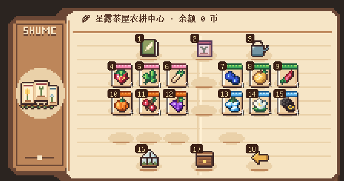

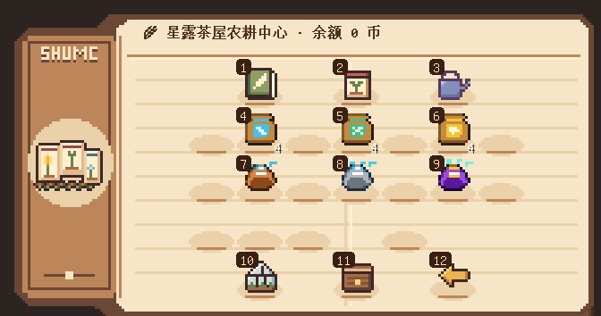
星露牧场 /ranch
/ranch（别名 /牧场、/养殖）。玩法是：养动物 → 产原料 → 放进加工机 → 出货或做大餐。
- 空手右键动物：每天摸一次，+25 好感。
- 拿饲料右键动物：涨好感并立刻产出 1 份星级原料（每只动物冷却 90 秒）。
- 喂自家田里的星级作物当零食：+5 好感，每只每天 3 次。拿原版胡萝卜 / 马铃薯 / 小麦（比如打僵尸掉的）喂不涨好感，只会让动物进入繁殖状态。
| 动物 | 产出 |
|---|---|
| 牛 / 哞菇 / 山羊 | 星露鲜奶 |
| 鸡 | 黄金土鸡蛋 |
| 猪 | 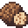 牧场黑松露 |
| 羊 / 羊驼 | 柔云细羊毛 |
| 蜜蜂 | 牧场百花蜜 |
饲料

3D 加工机
摆在家里，手拿原料右键投料，做好后右键收取。牧场执照等级越高越快。
| 加工机 | 价格 | 加工 | 耗时 | 成品收购价 |
|---|---|---|---|---|
| 蛋黄酱制作机 | 1200 币 | 鸡蛋 → 金丝蛋黄酱 | 90 秒 | 38 币起 |
| 奶酪压榨机 | 1500 币 | 鲜奶 → 星露陈年奶酪 | 110 秒 | 42 币起 |
| 茶屋织布机 | 1800 币 | 羊毛 → 星露丝绒布 | 120 秒 | 40 币起 |
| 松露精油机 | 2800 币 | 黑松露 → 黑金松露精油 | 150 秒 | 98 币起 |
牧场执照（Lv0–3）升级后摸 / 喂动物涨好感更快、产品更容易出高星、加工机更快；Lv1「🌱 见习牧场主」1200 币（好感 +20%、加工快 10%）。奶酪、蛋黄酱、精油都是 3D 宴席 的关键食材。

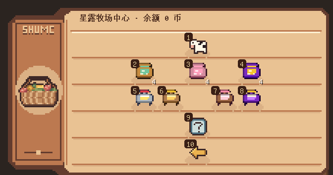